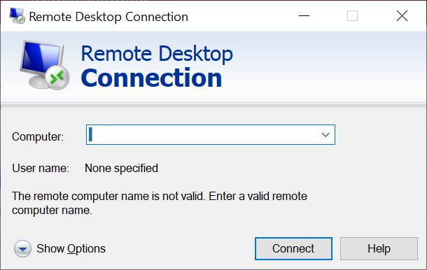
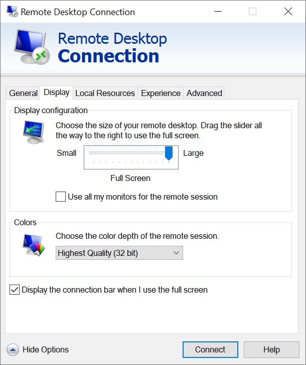
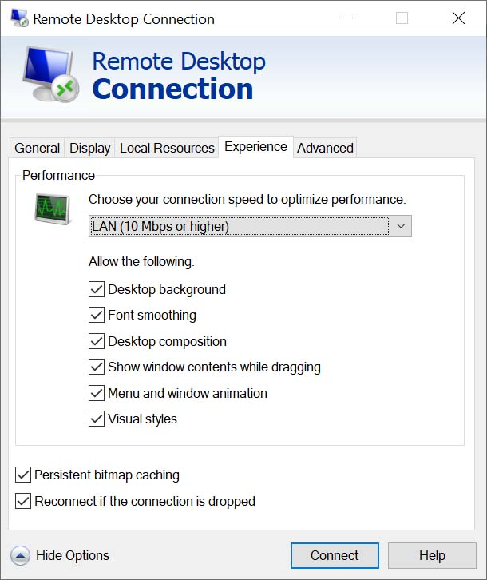
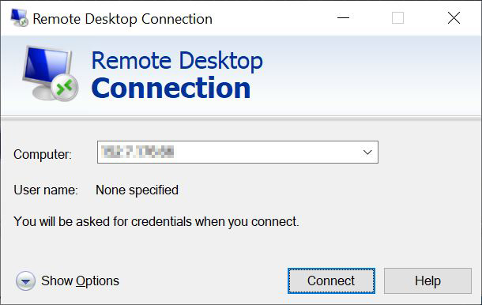
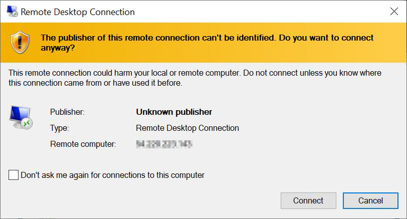
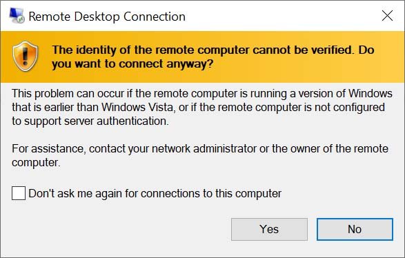
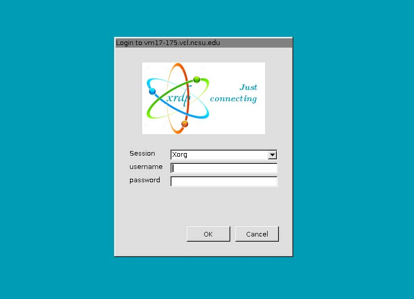
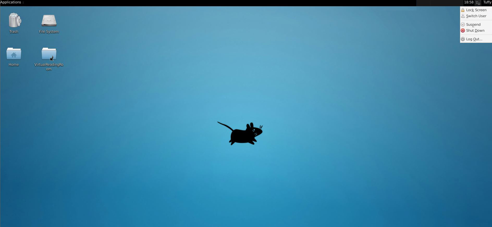

Connecting from Windows
Open Remote Desktop Connection
Start the Remote Desktop Connection software by going to the search bar in the bottom left corner of your screen. Type in mstsc.exe and hit Enter. A pop-up window will appear.

Adjust your settings
Adjust your software settings for the best viewing experience. In the pop-up window, click on Show Options if you do not see the General, Display, Local Resources, and Experience tabs.
Under Display > Colors, select Highest Quality (32 bit).

Under Experience > Performance, select LAN from the drop-down menu.

Return to the General tab and login by entering the Remote Computer number you wrote down earlier into the Computer text field. Click the Connect button.

If you are prompted with a window saying, “The publisher of this remote connection cannot be identified. Do you want to connect anyway?” click Connect.

If you see a window saying, “The identity of the remote computer cannot be verified. Do you want to connect anyway?” click Yes.

Log into the virtual reading room
Enter the username and password you wrote down when clicking Connect on the website.

If you see a message that says, “Welcome to the first start of the panel,” select “Use default config.”
If you are asked whether you’d like to upgrade Ubuntu, select “Don’t Upgrade.”
View your materials
When you are on the Desktop, go to the VirtualReadingRoom folder. Then open the folder which has your name.

Request reproductions
If you’d like to request reproductions, copy those files into DuplicationsRequests, which is located in the folder with your name. Fill out the duplication request form we emailed you, and then email us your completed form.
End your session
Go to the top right corner of the Desktop, click on your username, and select Log Out. Then click on Log Out (do not click on Shut Down).
